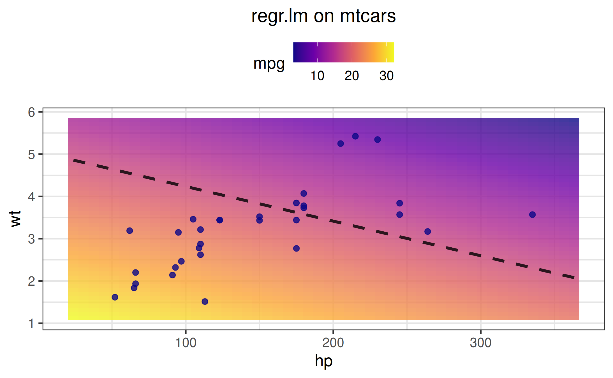

Customization guide
customization_guide.Rmdvistool cleanly separates what to plot
from how it should look. Work through it in three quick
moves:
-
Initialize a visualizer with
as_visualizer()to handle the computation and choose a theme, - add layers that pick up colors automatically,
-
plot with
plot(), tweaking options as needed, and optionally callsave().
NOTE: The built-in themes (
viridis,plasma,grayscale) are tuned to look great out of the box, so you can skip extra styling and still land on a polished plot.
This keeps customization consistent across every visualization while respecting the theme precedence.
LaTeX support
plotly surfaces automatically render MathJax when labels
contain LaTeX syntax. You can control the MathJax source globally via
options(vistool.mathjax = “cdn”) (default), “local” to use a system
installation, or a full URL for a self-hosted source. For
ggplot2 figures, the latex2exp package must be
installed.
Theme system overview
Theme precedence (highest to lowest)
-
Layer-specific style:
add_points(color = "red", size = 3) -
Plot theme override:
plot(theme = list(palette = "plasma")) -
Instance theme:
vis$set_theme(vistool_theme(...)) -
Package default:
options(vistool.theme = vistool_theme(...))
Creating and using themes
my_theme = vistool_theme(
palette = "plasma", # Color palette: "viridis", "plasma", "grayscale"
text_size = 14, # Base text size
theme = "bw", # ggplot2 theme: "minimal", "bw", "classic", etc.
alpha = 0.7, # Default transparency
line_width = 1.5, # Default line width
point_size = 3, # Default point size
legend_position = "top", # Legend position
show_grid = TRUE, # Show grid lines
grid_color = "gray95", # Grid color
background = "white" # Background color
)
obj = obj("TF_branin")
vis = as_visualizer(obj, type = "2d")
# setting the theme
vis$set_theme(my_theme)
# adding layers
vis$add_contours(color = "auto")
# override the theme for specific plots
vis$plot(theme = list(text_size = 12, alpha = 0.9))Layer-specific customization
All add_*() methods support style parameters that
override theme defaults (see the reference!). Below are common
examples:
add_points()
vis$add_points(
points, # Point data
color = "auto", # "auto" uses theme palette, or specify color
size = NULL, # Point size (NULL uses theme default)
shape = 19, # Point shape
alpha = NULL, # Transparency (NULL uses theme default)
annotations = NULL, # Text labels for points
annotation_size = NULL, # Size of annotations
ordered = FALSE, # Draw arrows between consecutive points
arrow_color = NULL, # Color of arrows
arrow_size = 0.3 # Size of arrows
)
add_optimization_trace()
vis$add_optimization_trace(
optimizer, # Optimizer object with trace data
line_color = NULL, # Color of the trace line (NULL -> "auto" resolved at plot time)
line_width = NULL, # Width of trace line (NULL -> theme$line_width)
line_type = "solid", # Line type: "solid", "dashed", "dotted"
npoints = NULL, # Number of points to show from the trace (NULL -> all)
npmax = NULL, # Maximum number of points to show (post-processing cap)
name = NULL, # Name for the trace (legend)
add_marker_at = 1, # Iteration numbers where to add markers
marker_size = 3, # Size of markers
marker_shape = 16, # Marker shape (ggplot2 integer or plotly symbol)
marker_color = NULL, # Color of markers (NULL -> uses line color)
show_start_end = TRUE, # Highlight start/end points (2D only)
alpha = NULL # Alpha transparency (NULL -> theme$alpha)
)
add_annotation()
add_annotation() attaches text callouts to any
visualizer. Supply absolute coordinates via x,
y, and z (surface plots), or pass
position = list(...) with values in [0, 1] for
relative placement. The method honors the current theme, resolving
color = "auto", default text size, and opacity
automatically; you can still override them per annotation. Set
latex = TRUE to typeset the label (requires
latex2exp for ggplot2).
# Absolute placement in data space
vis$add_annotation(
text = "Optimum",
x = 0, y = 0,
color = "auto",
opacity = 0.8
)
# Relative placement in the plot window
vis$add_annotation(
text = "${}\\nabla f = 0$",
latex = TRUE,
position = list(x = 0.85, y = 0.2, reference = "figure"),
color = "auto"
)Plot-level customization
The plot() method accepts theme overrides and functional
parameters:
vis$plot(
# Theme override (merged with instance theme)
theme = list(
palette = "grayscale", # Override palette for this plot
text_size = 16, # Override text size
alpha = 0.5, # Override default alpha
theme = "classic" # Override ggplot2 theme
),
show_title = TRUE, # Show/hide title
plot_title = "My Plot", # Custom title
plot_subtitle = "Subtitle", # Add subtitle
show_legend = TRUE, # Show/hide legend
legend_title = "Legend", # Custom legend title
x_lab = "X Variable", # Custom axis labels
y_lab = "Y Variable",
z_lab = "Z Variable", # For surface plots
x_limits = c(-2, 2), # Custom axis limits
y_limits = c(-1, 1),
z_limits = c(0, 100) # For surface plots
)Note that you can further customize the returned plot objects directly by adding manual layers. For some examples, see the Advanced visualization vignette.
Automatic color management
All visual elements support automatic color assignment using
color = "auto":
- Colors are automatically assigned from the effective theme palette
- Each visualizer tracks its color index to ensure distinct colors for multiple layers
- The color index resets on each
plot()call - Manual colors override automatic assignment
# Example: Multiple traces with auto colors
vis = as_visualizer(obj("TF_branin"), type = "2d")
vis$set_theme(vistool_theme(palette = "plasma"))
vis$add_optimization_trace(optimizer1, line_color = "auto") # Gets first color
vis$add_optimization_trace(optimizer2, line_color = "auto") # Gets second color
vis$add_points(custom_points, color = "auto") # Gets third color
# Plot and colors will be consistent with plasma palette
p = vis$plot()Example: complete workflow
# 1. Create visualizer (computational setup only)
task = tsk("mtcars")$select(c("wt", "hp"))
learner = lrn("regr.lm")
vis = as_visualizer(task, learner = learner, n_points = 50, padding = 0.1)
# 2. Set instance theme
vis$set_theme(vistool_theme(
palette = "plasma",
text_size = 12,
theme = "bw",
alpha = 0.8
))
# 3. Add layers with automatic styling
vis$add_training_data(color = "auto") # Uses theme palette
vis$add_boundary(color = "black") # Manual override
# 4. Plot with theme override for this render only
vis$plot(theme = list(text_size = 14, legend_position = "top"), show_title = FALSE)
# 5. Save uses the cached plot for efficiency
vis$save("my_plot.png", width = 8, height = 6)Package-level defaults
Set global defaults that apply to all new visualizers:
# Set package default theme
options(vistool.theme = vistool_theme(
palette = "plasma",
text_size = 12,
theme = "bw"
))
# All new visualizers will use this theme unless overridden
vis1 = as_visualizer(obj("TF_branin")) # Uses plasma palette
vis2 = as_visualizer(obj("TF_gaussian1")) # Also uses plasma palette
# Instance themes still override package defaults
vis1$set_theme(vistool_theme(palette = "grayscale")) # Now uses grayscale